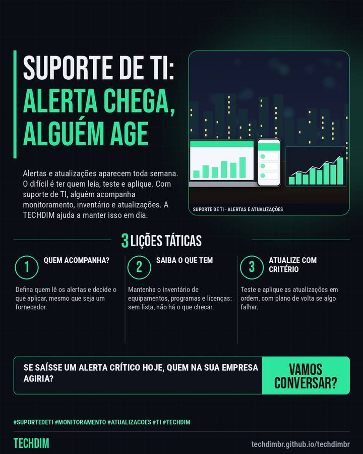

Serviço TECHDIM
Suporte de TI: alguém acompanhando alertas e atualizações antes que virem problema
Alertas e atualizações aparecem toda semana. O difícil é ter quem leia, teste e aplique. Com suporte de TI, alguém acompanha monitoramento, inventário e atualizações. A TECHDIM ajuda a manter isso em dia.

O que a TECHDIM faz
- Toda semana surgem alertas e atualizações importantes. Em muitas empresas ninguém tem tempo de ler, testar e aplicar: o aviso chega, mas a ação não
- A TECHDIM presta suporte de TI a pequenas e médias empresas: monitoramento proativo, inventário de equipamentos e licenças, atualizações e um ponto de contato
- Você sabe o que mudou e o que ainda precisa de decisão da sua empresa, em linguagem simples, sem depender de alguém da equipe para acompanhar tudo
Quem cuida dos alertas e das atualizações de TI da sua empresa hoje? Fale com a TECHDIM: techdimbr.github.io/techdimbr
Como funciona
- Quem acompanha?. Defina quem lê os alertas e decide o que aplicar, mesmo que seja um fornecedor.
- Saiba o que tem. Mantenha o inventário de equipamentos, programas e licenças: sem lista, não há o que checar.
- Atualize com critério. Teste e aplique as atualizações em ordem, com plano de volta se algo falhar.
Mais do Radar de hoje
- Notícia de tecnologia Agentes de IA em testes acessaram dados de empresas na Índia por credenciais expostas
- Alerta de segurança AOMEI Backupper: servidores de atualização foram adulterados e instalaram backdoor
- Dica prática BitLocker nos notebooks da empresa: criptografe o disco em 5 passos contra perda e roubo
Leia também
Este texto resume as fontes citadas na data de publicação. Confira sempre o aviso oficial do fabricante antes de agir em produção.